This section includes technical information on the models currently implemented in Zelig (5.0.1). This includes a reference with a list of supported models as well as individual model vignettes with detailed information on the model, quantities of interest and syntax.
The following models hare currently supported in Zelig 5:
Exponential Regression for Duration Dependent Variables
Use the exponential duration regression model if you have a dependent variable representing a duration (time until an event). The model assumes a constant hazard rate for all events. The dependent variable may be censored (for observations have not yet been completed when data were collected).
With reference classes:
z5 <- zexp$new()
z5$zelig(Surv(Y, C) ~ X, data = mydata)
z5$setx()
z5$sim()
With the Zelig 4 compatibility wrappers:
z.out <- zelig(Surv(Y, C) ~ X, model = "exp", data = mydata)
x.out <- setx(z.out)
s.out <- sim(z.out, x = x.out)
Exponential models require that the dependent variable be in the form
Surv(Y, C), where Y and C are vectors of length  . For each
observation
. For each
observation  in 1, …, , the value
in 1, …, , the value  is the
duration (lifetime, for example), and the associated
is the
duration (lifetime, for example), and the associated  is a
binary variable such that
is a
binary variable such that  if the duration is not
censored (e.g., the subject dies during the study) or
if the duration is not
censored (e.g., the subject dies during the study) or  if the duration is censored (e.g., the subject is still alive at the
end of the study and is know to live at least as long as ).
If is omitted, all Y are assumed to be completed; that is,
time defaults to 1 for all observations.
if the duration is censored (e.g., the subject is still alive at the
end of the study and is know to live at least as long as ).
If is omitted, all Y are assumed to be completed; that is,
time defaults to 1 for all observations.
In addition to the standard inputs, zelig() takes the following additional options for exponential regression:
z.out <- zelig(y ~ x1 + x2, robust = TRUE, cluster = "x3",
model = "exp", data = mydata)
means that the observations can be correlated within the strata defined by the variable x3, and that robust standard errors should be calculated according to those clusters. If robust = TRUE but cluster is not specified, zelig() assumes that each observation falls into its own cluster.
Attach the sample data:
data(coalition)
Estimate the model:
z.out <- zelig(Surv(duration, ciep12) ~ fract + numst2, model = "exp", data = coalition)
## How to cite this model in Zelig:
## Olivia Lau, Kosuke Imai, Gary King. 2011.
## exp: Exponential Regression for Duration Dependent Variables
## in Kosuke Imai, Gary King, and Olivia Lau, "Zelig: Everyone's Statistical Software,"
## http://datascience.iq.harvard.edu/zelig
View the regression output:
summary(z.out)
## Model: 1Call:
## survival::survreg(formula = Surv(duration, ciep12) ~ fract +
## numst2, data = ., dist = "exponential", model = FALSE)
##
## Coefficients:
## (Intercept) fract numst2
## 5.535873 -0.003909 0.461179
##
## Scale fixed at 1
##
## Loglik(model)= -1077 Loglik(intercept only)= -1101
## Chisq= 46.66 on 2 degrees of freedom, p= 7.4e-11
## n= 314
## Next step: Use 'setx' method
Set the baseline values (with the ruling coalition in the minority) and the alternative values (with the ruling coalition in the majority) for X:
x.low <- setx(z.out, numst2 = 0)
x.high <- setx(z.out, numst2 = 1)
Simulate expected values and first differences:
s.out <- sim(z.out, x = x.low, x1 = x.high)
Summarize quantities of interest and produce some plots:
summary(s.out)
##
## sim x :
## -----
## ev
## mean sd 50% 2.5% 97.5%
## 1 15.27 1.425 15.21 12.62 18.03
## pv
## mean sd 50% 2.5% 97.5%
## [1,] 15.44 15.56 10.8 0.4354 59.31
##
## sim x1 :
## -----
## ev
## mean sd 50% 2.5% 97.5%
## 1 24.34 1.948 24.31 20.73 28.07
## pv
## mean sd 50% 2.5% 97.5%
## [1,] 24.59 25.87 16.51 0.5998 93.27
## fd
## mean sd 50% 2.5% 97.5%
## 1 9.068 2.333 9.021 4.967 13.53
plot(s.out)
Let  be the survival time for observation . This
variable might be censored for some observations at a fixed time
be the survival time for observation . This
variable might be censored for some observations at a fixed time
 such that the fully observed dependent variable,
such that the fully observed dependent variable,
 , is defined as
, is defined as

The stochastic component is described by the distribution of the
partially observed variable  . We assume
follows the exponential distribution whose density function is given
by
. We assume
follows the exponential distribution whose density function is given
by

for  and
and  . The mean of this
distribution is
. The mean of this
distribution is  .
.
In addition, survival models like the exponential have three
additional properties. The hazard function  measures the
probability of not surviving past time
measures the
probability of not surviving past time  given survival up to
. In general, the hazard function is equal to
given survival up to
. In general, the hazard function is equal to
 where the survival function
where the survival function
 represents the fraction still
surviving at time . The cumulative hazard function
represents the fraction still
surviving at time . The cumulative hazard function
 describes the probability of dying before time
. In general,
describes the probability of dying before time
. In general,
 . In the case of the
exponential model,
. In the case of the
exponential model,

For the exponential model, the hazard function is
constant over time. The Weibull model and lognormal models allow the
hazard function to vary as a function of elapsed time (see and
respectively).
The systematic component is modeled as

where  is the vector of explanatory variables, and
is the vector of explanatory variables, and
 is the vector of coefficients.
is the vector of coefficients.
The expected values (qi$ev) for the exponential model are simulations
of the expected duration given and draws of
from its posterior,

The predicted values (qi$pr) are draws from the exponential distribution with rate equal to the expected value.
The first difference (or difference in expected values, qi$ev.diff), is

where  and
and  are different vectors of values for
the explanatory variables.
are different vectors of values for
the explanatory variables.
In conditional prediction models, the average expected treatment effect (att.ev) for the treatment group is
![\frac{1}{\sum_{i=1}^n t_i}\sum_{i:t_i=1}^n \left\{ Y_i(t_i=1) - E[Y_i(t_i=0)]
\right\},](_images/math/c086d795134e74f3fe435647603c4583f4d1dac3.png)
where  is a binary explanatory variable defining the
treatment (
is a binary explanatory variable defining the
treatment ( ) and control (
) and control ( ) groups. When
) groups. When
 is censored rather than observed, we replace it
with a simulation from the model given available knowledge of the
censoring process. Variation in the simulations is due to two
factors: uncertainty in the imputation process for censored
is censored rather than observed, we replace it
with a simulation from the model given available knowledge of the
censoring process. Variation in the simulations is due to two
factors: uncertainty in the imputation process for censored
 and uncertainty in simulating
and uncertainty in simulating ![E[Y_i(t_i=0)]](_images/math/f658a3cf4cf830cd65eab505c530fb4796fea0ed.png) ,
the counterfactual expected value of for observations in
the treatment group, under the assumption that everything stays the
same except that the treatment indicator is switched to
.
,
the counterfactual expected value of for observations in
the treatment group, under the assumption that everything stays the
same except that the treatment indicator is switched to
.
In conditional prediction models, the average predicted treatment effect (att.pr) for the treatment group is

where is a binary explanatory variable defining the
treatment () and control () groups. When
is censored rather than observed, we replace it
with a simulation from the model given available knowledge of the
censoring process. Variation in the simulations is due to two
factors: uncertainty in the imputation process for censored
and uncertainty in simulating
 , the counterfactual predicted value of
for observations in the treatment group, under the
assumption that everything stays the same except that the treatment
indicator is switched to .
, the counterfactual predicted value of
for observations in the treatment group, under the
assumption that everything stays the same except that the treatment
indicator is switched to .
The output of each Zelig command contains useful information which you may view. For example, if you run z.out <- zelig(Surv(Y, C) ~ X, model = exp, data), then you may examine the available information in z.out by using names(z.out), see the coefficients by using z.out$coefficients, and a default summary of information through summary(z.out). Other elements available through the $ operator are listed below.
The exponential function is part of the survival library by Terry Therneau, ported to R by Thomas Lumley. Advanced users may wish to refer to help(survfit) in the survival library.
Gamma Regression for Continuous, Positive Dependent Variables
Use the gamma regression model if you have a positive-valued dependent variable such as the number of years a parliamentary cabinet endures, or the seconds you can stay airborne while jumping. The gamma distribution assumes that all waiting times are complete by the end of the study (censoring is not allowed).
z.out <- zelig(Y ~ X1 + X2, model = "gamma", data = mydata)
x.out <- setx(z.out)
s.out <- sim(z.out, x = x.out, x1 = NULL)
Attach the sample data:
data(coalition)
Estimate the model:
z.out <- zelig(duration fract + numst2, model = “gamma”, data =
coalition)
View the regression output:
summary(z.out)
Set the baseline values (with the ruling coalition in the minority) and the alternative values (with the ruling coalition in the majority) for X:
x.low <- setx(z.out, numst2 = 0) RRR> x.high <- setx(z.out, numst2
= 1)
Simulate expected values (qi$ev) and first differences (qi$fd):
s.out <- sim(z.out, x = x.low, x1 = x.high)
summary(s.out)
plot(s.out)
The Gamma distribution with scale parameter  has a
stochastic component:
has a
stochastic component:
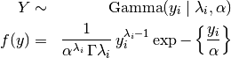
The systematic component is given by
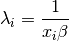
The expected values (qi$ev) are simulations of the mean of the
stochastic component given draws of and
from their posteriors:
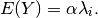
The predicted values (qi$pr) are draws from the gamma distribution for each given set of parameters 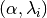.
If x1 is specified, sim() also returns the differences in the expected values (qi$fd),
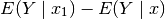
.
In conditional prediction models, the average expected treatment effect (att.ev) for the treatment group is
![\frac{1}{\sum_{i=1}^n t_i}\sum_{i:t_i=1}^n \left\{ Y_i(t_i=1) -
E[Y_i(t_i=0)] \right\},](_images/math/f120915a77efb3200aab141647a59f51df9b4611.png)
where is a binary explanatory variable defining the
treatment () and control () groups.
Variation in the simulations are due to uncertainty in simulating
, the counterfactual expected value of
for observations in the treatment group, under the
assumption that everything stays the same except that the treatment
indicator is switched to .
In conditional prediction models, the average predicted treatment effect (att.pr) for the treatment group is

where is a binary explanatory variable defining the
treatment () and control () groups.
Variation in the simulations are due to uncertainty in simulating
, the counterfactual predicted value of
for observations in the treatment group, under the
assumption that everything stays the same except that the treatment
indicator is switched to .
The output of each Zelig command contains useful information which you may view. For example, if you run z.out <- zelig(y ~ x, model = gamma, data), then you may examine the available information in z.out by using names(z.out), see the coefficients by using z.out$coefficients, and a default summary of information through summary(z.out). Other elements available through the $ operator are listed below.
 -values, and -statistics.
-values, and -statistics. matrix of scaled covariances. matrix of unscaled covariances.
matrix of scaled covariances. matrix of unscaled covariances. x-observation (for more than one x-observation). Available quantities
are:
x-observation (for more than one x-observation). Available quantities
are:The gamma model is part of the stats package by . Advanced users may wish to refer to help(glm) and help(family).
Logistic Regression for Dichotomous Dependent Variables
Logistic regression specifies a dichotomous dependent variable as a function of a set of explanatory variables.
z.out <- zelig(Y ~ X1 + X2, model = "logit", data = mydata)
x.out <- setx(z.out)
s.out <- sim(z.out, x = x.out, x1 = NULL)
In addition to the standard inputs, zelig() takes the following additional options for logistic regression:
robust: defaults to FALSE. If TRUE is selected, zelig() computes robust standard errors via the sandwich package (see ). The default type of robust standard error is heteroskedastic and autocorrelation consistent (HAC), and assumes that observations are ordered by time index.
In addition, robust may be a list with the following options:
Attaching the sample turnout dataset:
data(turnout)
Estimating parameter values for the logistic regression:
z.out1 <- zelig(vote age + race, model = “logit”, data = turnout)
Setting values for the explanatory variables:
x.out1 <- setx(z.out1, age = 36, race = “white”)
Simulating quantities of interest from the posterior distribution.
s.out1 <- sim(z.out1, x = x.out1)
summary(s.out1)
plot(s.out1)
Estimating the risk difference (and risk ratio) between low education (25th percentile) and high education (75th percentile) while all the other variables held at their default values.
z.out2 <- zelig(vote race + educate, model = “logit”, data =
turnout) > x.high <- setx(z.out2, educate = quantile(turnout\ :math:`educate, prob = 0.75))
x.low <- setx(z.out2, educate = quantile(turnout`\ educate, prob = 0.25))
s.out2 <- sim(z.out2, x = x.high, x1 = x.low)
summary(s.out2)
plot(s.out2)
One can use an ROC plot to evaluate the fit of alternative model specifications. (Use demo(roc) to view this example, or see King and Zeng (2002).)
z.out1 <- zelig(vote race + educate + age, model = “logit”, +
data = turnout) > z.out2 <- zelig(vote race + educate, model =
“logit”, data = turnout)
rocplot(z.out1\ :math:`y, z.out2`\ y, fitted(z.out1),
fitted(z.out2))
Let be the binary dependent variable for observation
which takes the value of either 0 or 1.
The stochastic component is given by
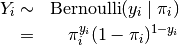
where 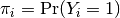.
The systematic component is given by:

where is the vector of  explanatory variables
for observation and is the vector of
coefficients.
explanatory variables
for observation and is the vector of
coefficients.
The expected values (qi$ev) for the logit model are simulations of the predicted probability of a success:
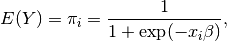
given draws of from its sampling distribution.
The predicted values (qi$pr) are draws from the Binomial distribution
with mean equal to the simulated expected value  .
.
The first difference (qi$fd) for the logit model is defined as
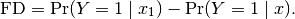
The risk ratio (qi$rr) is defined as
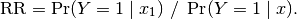
In conditional prediction models, the average expected treatment effect (att.ev) for the treatment group is
where is a binary explanatory variable defining the
treatment () and control () groups.
Variation in the simulations are due to uncertainty in simulating
, the counterfactual expected value of
for observations in the treatment group, under the
assumption that everything stays the same except that the treatment
indicator is switched to .
In conditional prediction models, the average predicted treatment effect (att.pr) for the treatment group is
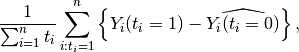
where is a binary explanatory variable defining the
treatment () and control () groups.
Variation in the simulations are due to uncertainty in simulating
, the counterfactual predicted value of
for observations in the treatment group, under the
assumption that everything stays the same except that the treatment
indicator is switched to .
The output of each Zelig command contains useful information which you may view. For example, if you run z.out <- zelig(y ~ x, model = logit, data), then you may examine the available information in z.out by using names(z.out), see the coefficients by using z.out$coefficients, and a default summary of information through summary(z.out).
The logit model is part of the stats package. Advanced users may wish to refer to help(glm) and help(family).
Log-Normal Regression for Duration Dependent Variables
The log-normal model describes an event’s duration, the dependent variable, as a function of a set of explanatory variables. The log-normal model may take time censored dependent variables, and allows the hazard rate to increase and decrease.
z.out <- zelig(Surv(Y, C) ~ X, model = "lognorm", data = mydata)
x.out <- setx(z.out)
s.out <- sim(z.out, x = x.out)
Log-normal models require that the dependent variable be in the form
Surv(Y, C), where Y and C are vectors of length . For each
observation in 1, …, , the value is the
duration (lifetime, for example) of each subject, and the associated
is a binary variable such that if the
duration is not censored (e.g., the subject dies during the study) or
if the duration is censored (e.g., the subject is
still alive at the end of the study). If is omitted, all Y
are assumed to be completed; that is, time defaults to 1 for all
observations.
In addition to the standard inputs, zelig() takes the following additional options for lognormal regression:
z.out <- zelig(y ~ x1 + x2, robust = TRUE, cluster = "x3", model = "exp", data = mydata)
means that the observations can be correlated within the strata defined by the variable x3, and that robust standard errors should be calculated according to those clusters. If robust = TRUE but cluster is not specified, zelig() assumes that each observation falls into its own cluster.
Attach the sample data:
data(coalition)
Estimate the model:
RRR> z.out <- zelig(Surv(duration, ciep12) fract + numst2, model =
“lognorm”, + data = coalition)
View the regression output:
summary(z.out)
Set the baseline values (with the ruling coalition in the minority) and the alternative values (with the ruling coalition in the majority) for X:
x.low <- setx(z.out, numst2 = 0) RRR> x.high <- setx(z.out, numst2
= 1)
Simulate expected values (qi$ev) and first differences (qi$fd):
s.out <- sim(z.out, x = x.low, x1 = x.high)
summary(s.out)
plot(s.out)
Let be the survival time for observation with
the density function  and the corresponding distribution
function
and the corresponding distribution
function  . This variable might be
censored for some observations at a fixed time such that the
fully observed dependent variable, , is defined as
. This variable might be
censored for some observations at a fixed time such that the
fully observed dependent variable, , is defined as
The stochastic component is described by the distribution of the
partially observed variable, . For the lognormal model,
there are two equivalent representations:

where the parameters  and
and  are the mean
and variance of the Normal distribution. (Note that the output from
zelig() parameterizes scale:math:` = sigma`.)
are the mean
and variance of the Normal distribution. (Note that the output from
zelig() parameterizes scale:math:` = sigma`.)
In addition, survival models like the lognormal have three additional
properties. The hazard function measures the probability
of not surviving past time given survival up to .
In general, the hazard function is equal to where
the survival function :math:`S(t) =
1 - int_{0}^t f(s) ds` represents the fraction still surviving at
time . The cumulative hazard function describes
the probability of dying before time . In general,
 . In the case of the lognormal
model,
. In the case of the lognormal
model,

where  is the cumulative density function for the
Normal distribution.
is the cumulative density function for the
Normal distribution.
The systematic component is described as:

The expected values (qi$ev) for the lognormal model are simulations of the expected duration:

given draws of and  from their sampling
distributions.
from their sampling
distributions.
The predicted value is a draw from the log-normal distribution given
simulations of the parameters  .
.
The first difference (qi$fd) is

In conditional prediction models, the average expected treatment effect (att.ev) for the treatment group is
![\frac{1}{\sum_{i=1}^n t_i}\sum_{i:t_i=1}^n \{ Y_i(t_i=1) - E[Y_i(t_i=0)] \},](_images/math/a42073a06e5f64918f546d89584110fe35c0e21d.png)
where is a binary explanatory variable defining the
treatment () and control () groups. When
is censored rather than observed, we replace it
with a simulation from the model given available knowledge of the
censoring process. Variation in the simulations is due to two
factors: uncertainty in the imputation process for censored
and uncertainty in simulating ,
the counterfactual expected value of for observations in
the treatment group, under the assumption that everything stays the
same except that the treatment indicator is switched to
.
In conditional prediction models, the average predicted treatment effect (att.pr) for the treatment group is

where is a binary explanatory variable defining the
treatment () and control () groups. When
is censored rather than observed, we replace it
with a simulation from the model given available knowledge of the
censoring process. Variation in the simulations are due to two
factors: uncertainty in the imputation process for censored
and uncertainty in simulating
, the counterfactual predicted value of
for observations in the treatment group, under the
assumption that everything stays the same except that the treatment
indicator is switched to .
The output of each Zelig command contains useful information which you may view. For example, if you run z.out <- zelig(Surv(Y, C) ~ X, model = lognorm, data), then you may examine the available information in z.out by using names(z.out), see the coefficients by using z.out$coefficients, and a default summary of information through summary(z.out). Other elements available through the $ operator are listed below.
.-values, and -statistics.
x-observation (for more than one x-observation). Available quantities
are:.The exponential function is part of the survival library by by Terry Therneau, ported to R by Thomas Lumley. Advanced users may wish to refer to help(survfit) in the survival library.
Least Squares Regression for Continuous Dependent Variables
Use least squares regression analysis to estimate the best linear predictor for the specified dependent variables.
z.out <- zelig(Y ~ X1 + X2, model = "ls", data = mydata)
x.out <- setx(z.out)
s.out <- sim(z.out, x = x.out)
Attach sample data:
data(macro)
Estimate model:
z.out1 <- zelig(unem gdp + capmob + trade, model = “ls”, data =
macro)
Summarize regression coefficients:
summary(z.out1)
Set explanatory variables to their default (mean/mode) values, with high (80th percentile) and low (20th percentile) values for the trade variable:
x.high <- setx(z.out1, trade = quantile(macro\ :math:`trade, 0.8))
x.low <- setx(z.out1, trade = quantile(macro`\ trade, 0.2))
Generate first differences for the effect of high versus low trade on GDP:
s.out1 <- sim(z.out1, x = x.high, x1 = x.low)
summary(s.out1)
plot(s.out1)
Estimate a model with fixed effects for each country (see for help with dummy variables). Note that you do not need to create dummy variables, as the program will automatically parse the unique values in the selected variable into discrete levels.
z.out2 <- zelig(unem gdp + trade + capmob + as.factor(country), +
model = “ls”, data = macro)
Set values for the explanatory variables, using the default mean/mode values, with country set to the United States and Japan, respectively:
x.US <- setx(z.out2, country = “United States”)
x.Japan <- setx(z.out2, country = “Japan”)
Simulate quantities of interest:
s.out2 <- sim(z.out2, x = x.US, x1 = x.Japan)
plot(s.out2)
The stochastic component is described by a density with mean
and the common variance

The systematic component models the conditional mean as

where is the vector of covariates, and is
the vector of coefficients.
The least squares estimator is the best linear predictor of a
dependent variable given , and minimizes the sum of
squared residuals,  .
.
The expected value (qi$ev) is the mean of simulations from the stochastic component,

given a draw of from its sampling distribution.
In conditional prediction models, the average expected treatment effect (att.ev) for the treatment group is
where is a binary explanatory variable defining the
treatment () and control () groups.
Variation in the simulations are due to uncertainty in simulating
, the counterfactual expected value of
for observations in the treatment group, under the
assumption that everything stays the same except that the treatment
indicator is switched to .
The output of each Zelig command contains useful information which you may view. For example, if you run z.out <- zelig(y ~ x, model = ls, data), then you may examine the available information in z.out by using names(z.out), see the coefficients by using z.out$coefficients, and a default summary of information through summary(z.out). Other elements available through the $ operator are listed below.
From the zelig() output object z.out, you may extract:
From summary(z.out), you may extract:
coefficients: the parameter estimates with their associated
standard errors, -values, and -statistics.

sigma: the square root of the estimate variance of the random
error  :
:

r.squared: the fraction of the variance explained by the model.

adj.r.squared: the above  statistic, penalizing for an
increased number of explanatory variables.
statistic, penalizing for an
increased number of explanatory variables.
cov.unscaled: a matrix of unscaled covariances.
From the sim() output object s.out, you may extract quantities of
interest arranged as matrices indexed by simulation
x-observation (for more than one x-observation). Available quantities
are:
The least squares regression is part of the stats package by William N. Venables and Brian D. Ripley .In addition, advanced users may wish to refer to help(lm) and help(lm.fit).
Negative Binomial Regression for Event Count Dependent Variables
Use the negative binomial regression if you have a count of events for each observation of your dependent variable. The negative binomial model is frequently used to estimate over-dispersed event count models.
z.out <- zelig(Y ~ X1 + X2, model = "negbin", data = mydata)
x.out <- setx(z.out)
s.out <- sim(z.out, x = x.out)
Load sample data:
data(sanction)
Estimate the model:
z.out <- zelig(num target + coop, model = “negbin”, data = sanction)
summary(z.out)
Set values for the explanatory variables to their default mean values:
x.out <- setx(z.out)
Simulate fitted values:
s.out <- sim(z.out, x = x.out)
summary(s.out)
plot(s.out)
Let be the number of independent events that occur during a
fixed time period. This variable can take any non-negative integer
value.
The negative binomial distribution is derived by letting the mean of
the Poisson distribution vary according to a fixed parameter
 given by the Gamma distribution. The stochastic
component is given by
given by the Gamma distribution. The stochastic
component is given by
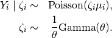
The marginal distribution of is then the negative
binomial with mean and variance
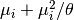:
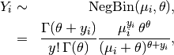
where  is the systematic parameter of the Gamma
distribution modeling 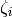.
is the systematic parameter of the Gamma
distribution modeling 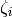.
The systematic component is given by

where is the vector of explanatory variables
and is the vector of coefficients.
The expected values (qi$ev) are simulations of the mean of the stochastic component. Thus,
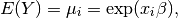
given simulations of .
The predicted value (qi$pr) drawn from the distribution defined by
the set of parameters  .
.
The first difference (qi$fd) is

In conditional prediction models, the average expected treatment effect (att.ev) for the treatment group is
where is a binary explanatory variable defining the
treatment () and control () groups.
Variation in the simulations are due to uncertainty in simulating
, the counterfactual expected value of
for observations in the treatment group, under the
assumption that everything stays the same except that the treatment
indicator is switched to .
In conditional prediction models, the average predicted treatment effect (att.pr) for the treatment group is
where is a binary explanatory variable defining the
treatment () and control () groups.
Variation in the simulations are due to uncertainty in simulating
, the counterfactual predicted value of
for observations in the treatment group, under the
assumption that everything stays the same except that the treatment
indicator is switched to .
The output of each Zelig command contains useful information which you may view. For example, if you run z.out <- zelig(y ~ x, model = negbin, data), then you may examine the available information in z.out by using names(z.out), see the coefficients by using z.out$coefficients, and a default summary of information through summary(z.out).
Normal Regression for Continuous Dependent Variables
The Normal regression model is a close variant of the more standard
least squares regression model (see ). Both models specify a continuous
dependent variable as a linear function of a set of explanatory
variables. The Normal model reports maximum likelihood (rather than
least squares) estimates. The two models differ only in their estimate
for the stochastic parameter .
z.out <- zelig(Y ~ X1 + X2, model = "normal", data = mydata)
x.out <- setx(z.out)
s.out <- sim(z.out, x = x.out)
Attach sample data:
data(macro)
Estimate model:
z.out1 <- zelig(unem gdp + capmob + trade, model = “normal”, + data
= macro)
Summarize of regression coefficients:
summary(z.out1)
Set explanatory variables to their default (mean/mode) values, with high (80th percentile) and low (20th percentile) values for trade:
x.high <- setx(z.out1, trade = quantile(macro\ :math:`trade, 0.8))
x.low <- setx(z.out1, trade = quantile(macro`\ trade, 0.2))
Generate first differences for the effect of high versus low trade on GDP:
s.out1 <- sim(z.out1, x = x.high, x1 = x.low)
summary(s.out1)
A visual summary of quantities of interest:
plot(s.out1)
Let be the continuous dependent variable for observation
.
The stochastic component is described by a univariate normal model
with a vector of means and scalar variance
:
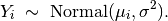
The systematic component is
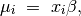
where is the vector of explanatory variables
and is the vector of coefficients.
The expected value (qi$ev) is the mean of simulations from the the stochastic component,
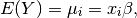
given a draw of from its posterior.
The predicted value (qi$pr) is drawn from the distribution defined by the set of parameters 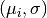.
The first difference (qi$fd) is:
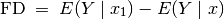
In conditional prediction models, the average expected treatment effect (att.ev) for the treatment group is
where is a binary explanatory variable defining the
treatment () and control () groups.
Variation in the simulations are due to uncertainty in simulating
, the counterfactual expected value of
for observations in the treatment group, under the
assumption that everything stays the same except that the treatment
indicator is switched to .
In conditional prediction models, the average predicted treatment effect (att.pr) for the treatment group is
where is a binary explanatory variable defining the
treatment () and control () groups.
Variation in the simulations are due to uncertainty in simulating
, the counterfactual predicted value of
for observations in the treatment group, under the
assumption that everything stays the same except that the treatment
indicator is switched to .
The output of each Zelig command contains useful information which you may view. For example, if you run z.out <- zelig(y ~ x, model = normal, data), then you may examine the available information in z.out by using names(z.out), see the coefficients by using z.out$coefficients, and a default summary of information through summary(z.out).
The normal model is part of the stats package by . Advanced users may wish to refer to help(glm) and help(family).
Poisson Regression for Event Count Dependent Variables
Use the Poisson regression model if the observations of your dependent variable represents the number of independent events that occur during a fixed period of time (see the negative binomial model, , for over-dispersed event counts.) For a Bayesian implementation of this model, see .
z.out <- zelig(Y ~ X1 + X2, model = "poisson", data = mydata)
x.out <- setx(z.out)
s.out <- sim(z.out, x = x.out)
Load sample data:
data(sanction)
Estimate Poisson model:
z.out <- zelig(num target + coop, model = “poisson”, data =
sanction)
summary(z.out)
Set values for the explanatory variables to their default mean values:
x.out <- setx(z.out)
Simulate fitted values:
s.out <- sim(z.out, x = x.out)
summary(s.out)
plot(s.out)
Let be the number of independent events that occur during a
fixed time period. This variable can take any non-negative integer.
The Poisson distribution has stochastic component

where is the mean and variance parameter.
The systematic component is

where is the vector of explanatory variables, and
is the vector of coefficients.
The expected value (qi$ev) is the mean of simulations from the stochastic component,

given draws of from its sampling distribution.
The predicted value (qi$pr) is a random draw from the poisson
distribution defined by mean .
The first difference in the expected values (qi$fd) is given by:
In conditional prediction models, the average expected treatment effect (att.ev) for the treatment group is
where is a binary explanatory variable defining the
treatment () and control () groups.
Variation in the simulations are due to uncertainty in simulating
, the counterfactual expected value of
for observations in the treatment group, under the
assumption that everything stays the same except that the treatment
indicator is switched to .
In conditional prediction models, the average predicted treatment effect (att.pr) for the treatment group is
where is a binary explanatory variable defining the
treatment () and control () groups.
Variation in the simulations are due to uncertainty in simulating
, the counterfactual predicted value of
for observations in the treatment group, under the
assumption that everything stays the same except that the treatment
indicator is switched to .
The output of each Zelig command contains useful information which you may view. For example, if you run z.out <- zelig(y ~ x, model = poisson, data), then you may examine the available information in z.out by using names(z.out), see the coefficients by using z.out$coefficients, and a default summary of information through summary(z.out).
The poisson model is part of the stats package by . Advanced users may wish to refer to help(glm) and help(family).
Probit Regression for Dichotomous Dependent Variables
Use probit regression to model binary dependent variables specified as a function of a set of explanatory variables.
z.out <- zelig(Y ~ X1 + X2, model = "probit", data = mydata)
x.out <- setx(z.out)
s.out <- sim(z.out, x = x.out, x1 = NULL)
Attach the sample turnout dataset:
data(turnout)
Estimate parameter values for the probit regression:
z.out <- zelig(vote race + educate, model = “probit”, data =
turnout)
summary(z.out)
Set values for the explanatory variables to their default values.
x.out <- setx(z.out)
Simulate quantities of interest from the posterior distribution.
s.out <- sim(z.out, x = x.out)
summary(s.out)
Let be the observed binary dependent variable for
observation which takes the value of either 0 or 1.
The stochastic component is given by

where .
The systematic component is
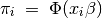
where 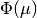 is the cumulative distribution function of the Normal distribution with mean 0 and unit variance.
The expected value (qi$ev) is a simulation of predicted probability of success
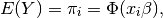
given a draw of from its sampling distribution.
The predicted value (qi$pr) is a draw from a Bernoulli distribution
with mean .
The first difference (qi$fd) in expected values is defined as
The risk ratio (qi$rr) is defined as
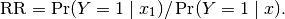
In conditional prediction models, the average expected treatment effect (att.ev) for the treatment group is
where is a binary explanatory variable defining the
treatment () and control () groups.
Variation in the simulations are due to uncertainty in simulating
, the counterfactual expected value of
for observations in the treatment group, under the
assumption that everything stays the same except that the treatment
indicator is switched to .
In conditional prediction models, the average predicted treatment effect (att.pr) for the treatment group is
where is a binary explanatory variable defining the
treatment () and control () groups.
Variation in the simulations are due to uncertainty in simulating
, the counterfactual predicted value of
for observations in the treatment group, under the
assumption that everything stays the same except that the treatment
indicator is switched to .
The output of each Zelig command contains useful information which you may view. For example, if you run z.out <- zelig(y ~ x, model = probit, data), then you may examine the available information in z.out by using names(z.out), see the coefficients by using z.out$coefficients, and a default summary of information through summary(z.out).
The probit model is part of the stats package by . Advanced users may wish to refer to help(glm) and help(family).
Rare Events Logistic Regression for Dichotomous Dependent Variables
The relogit procedure estimates the same model as standard logistic regression (appropriate when you have a dichotomous dependent variable and a set of explanatory variables; see ), but the estimates are corrected for the bias that occurs when the sample is small or the observed events are rare (i.e., if the dependent variable has many more 1s than 0s or the reverse). The relogit procedure also optionally uses prior correction for case-control sampling designs.
z.out <- zelig(Y ~ X1 + X2, model = "relogit", tau = NULL,
case.control = c("prior", "weighting"),
bias.correct = TRUE, robust = FALSE,
data = mydata, ...)
x.out <- setx(z.out)
s.out <- sim(z.out, x = x.out)
The relogit procedure supports four optional arguments in addition to the standard arguments for zelig(). You may additionally use:
 ,
the true population fraction of ones. Use, for example, tau = c(0.05,
0.1) to specify that the lower bound on tau is 0.05 and the upper
bound is 0.1. If left unspecified, only finite-sample bias correction
is performed, not case-control correction.
,
the true population fraction of ones. Use, for example, tau = c(0.05,
0.1) to specify that the lower bound on tau is 0.05 and the upper
bound is 0.1. If left unspecified, only finite-sample bias correction
is performed, not case-control correction.Note that if tau = NULL, bias.correct = FALSE, the relogit procedure performs a standard logistic regression without any correction.
Due to memory and space considerations, the data used here are a sample
drawn from the full data set used in King and Zeng, 2001, The proportion
of militarized interstate conflicts to the absence of disputes is
 . To estimate the model,
. To estimate the model,
data(mid)
z.out1 <- zelig(conflict major + contig + power + maxdem + mindem + years, + data = mid, model = “relogit”, tau = 1042/303772)
Summarize the model output:
summary(z.out1)
Set the explanatory variables to their means:
x.out1 <- setx(z.out1)
Simulate quantities of interest:
s.out1 <- sim(z.out1, x = x.out1) RRR> summary(s.out1)
plot(s.out1)
Suppose that we wish to perform case control correction using weighting (rather than the default prior correction). To estimate the model:
z.out2 <- zelig(conflict major + contig + power + maxdem + mindem
+ years, + data = mid, model = “relogit”, tau = 1042/303772, +
case.control = “weighting”, robust = TRUE)
Summarize the model output:
summary(z.out2)
Set the explanatory variables to their means:
x.out2 <- setx(z.out2)
Simulate quantities of interest:
s.out2 <- sim(z.out2, x = x.out2)
summary(s.out2)
Suppose that we did not know that  , but only
that it was somewhere between
, but only
that it was somewhere between  . To estimate a
model with a range of feasible estimates for (using the
default prior correction method for case control correction):
. To estimate a
model with a range of feasible estimates for (using the
default prior correction method for case control correction):
z.out2 <- zelig(conflict major + contig + power + maxdem + mindem
+ + years, data = mid, model = “relogit”, + tau = c(0.002, 0.005))
Summarize the model output:
summary(z.out2)
Set the explanatory variables to their means:
x.out2 <- setx(z.out2)
Simulate quantities of interest:
s.out <- sim(z.out2, x = x.out2)
summary(s.out2)
plot(s.out2)
The cost of giving a range of values for is that point
estimates are not available for quantities of interest. Instead,
quantities are presented as confidence intervals with significance less
than or equal to a specified level (e.g., at least 95% of the
simulations are contained in the nominal 95% confidence interval).
Like the standard logistic regression, the stochastic component for the rare events logistic regression is:
where is the binary dependent variable, and takes a value
of either 0 or 1.
The systematic component is:
If the sample is generated via a case-control (or choice-based) design, such as when drawing all events (or “cases”) and a sample from the non-events (or “controls”) and going backwards to collect the explanatory variables, you must correct for selecting on the dependent variable. While the slope coefficients are approximately unbiased, the constant term may be significantly biased. Zelig has two methods for case control correction:
The “prior correction” method adjusts the intercept term. Let
be the true population fraction of events,
 the fraction of events in the sample, and
the fraction of events in the sample, and
 the uncorrected intercept term. The
corrected intercept
the uncorrected intercept term. The
corrected intercept  is:
is:
![\beta = \hat{\beta_0} - \ln \left[ \bigg( \frac{1 - \tau}{\tau}
\bigg) \bigg( \frac{\bar{y}}{1 - \bar{y}} \bigg) \right].](_images/math/b3f4429515a74871c61649fe2b350bfe49da7123.png)
The “weighting” method performs a weighted logistic regression to
correct for a case-control sampling design. Let the 1 subscript
denote observations for which the dependent variable is observed
as a 1, and the 0 subscript denote observations for which the
dependent variable is observed as a 0. Then the vector of weights


If is unknown, you may alternatively specify an upper
and lower bound for the possible range of . In this case,
the relogit procedure uses “robust Bayesian” methods to generate a
confidence interval (rather than a point estimate) for each quantity
of interest. The nominal coverage of the confidence interval is at
least as great as the actual coverage.
By default, estimates of the the coefficients are
bias-corrected to account for finite sample or rare events bias. In
addition, quantities of interest, such as predicted probabilities,
are also corrected of rare-events bias. If  are the uncorrected logit coefficients and
bias() is the bias term, the corrected
coefficients
are the uncorrected logit coefficients and
bias() is the bias term, the corrected
coefficients  are
are

The bias term is

where

where and  are given in the “weighting”
section above.
are given in the “weighting”
section above.
For either one or no :
The expected values (qi$ev) for the rare events logit are simulations of the predicted probability

given draws of from its posterior.
The predicted value (qi$pr) is a draw from a binomial distribution
with mean equal to the simulated .
The first difference (qi$fd) is defined as

The risk ratio (qi$rr) is defined as

For a range of defined by ![[\tau_1, \tau_2]](_images/math/9c8d376f26cfc87ab8a0956d91e826558ef973d6.png) , each
of the quantities of interest are
, each
of the quantities of interest are  matrices, which
report the lower and upper bounds, respectively, for a confidence
interval with nominal coverage at least as great as the actual
coverage. At worst, these bounds are conservative estimates for the
likely range for each quantity of interest. Please refer to for the
specific method of calculating bounded quantities of interest.
matrices, which
report the lower and upper bounds, respectively, for a confidence
interval with nominal coverage at least as great as the actual
coverage. At worst, these bounds are conservative estimates for the
likely range for each quantity of interest. Please refer to for the
specific method of calculating bounded quantities of interest.
In conditional prediction models, the average expected treatment effect (att.ev) for the treatment group is
where is a binary explanatory variable defining the
treatment () and control () groups.
Variation in the simulations are due to uncertainty in simulating
, the counterfactual expected value of
for observations in the treatment group, under the
assumption that everything stays the same except that the treatment
indicator is switched to .
In conditional prediction models, the average predicted treatment effect (att.pr) for the treatment group is
where is a binary explanatory variable defining the
treatment () and control () groups.
Variation in the simulations are due to uncertainty in simulating
, the counterfactual predicted value of
for observations in the treatment group, under the
assumption that everything stays the same except that the treatment
indicator is switched to .
The output of each Zelig command contains useful information which you may view. For example, if you run z.out <- zelig(y ~ x, model = relogit, data), then you may examine the available information in z.out by using names(z.out), see the coefficients by using z.out$coefficients, and a default summary of information through summary(z.out).
The Stata version of ReLogit and the R implementation differ slightly in their coefficient estimates due to differences in the matrix inversion routines implemented in R and Stata. Zelig uses orthogonal-triangular decomposition (through lm.influence()) to compute the bias term, which is more numerically stable than standard matrix calculations.
Linear Regression for a Left-Censored Dependent Variable
Tobit regression estimates a linear regression model for a left-censored dependent variable, where the dependent variable is censored from below. While the classical tobit model has values censored at 0, you may select another censoring point. For other linear regression models with fully observed dependent variables, see Bayesian regression (), maximum likelihood normal regression (), or least squares ().
> z.out <- zelig(Y ~ X1 + X2, below = 0, above = Inf,
model = "tobit", data = mydata)
> x.out <- setx(z.out)
> s.out <- sim(z.out, x = x.out)
zelig() accepts the following arguments to specify how the dependent variable is censored.
below: (defaults to 0) The point at which the dependent variable is censored from below. If any values in the dependent variable are observed to be less than the censoring point, it is assumed that that particular observation is censored from below at the observed value. (See for a Bayesian implementation that supports both left and right censoring.)
robust: defaults to FALSE. If TRUE, zelig() computes robust standard errors based on sandwich estimators (see and ) and the options selected in cluster.
cluster: if robust = TRUE, you may select a variable to define groups of correlated observations. Let x3 be a variable that consists of either discrete numeric values, character strings, or factors that define strata. Then
> z.out <- zelig(y ~ x1 + x2, robust = TRUE, cluster = "x3",
model = "tobit", data = mydata)
means that the observations can be correlated within the strata defined by the variable x3, and that robust standard errors should be calculated according to those clusters. If robust = TRUE but cluster is not specified, zelig() assumes that each observation falls into its own cluster.
Zelig users may wish to refer to help(survreg) for more information.
data(tobin)
Estimating linear regression using tobit:
z.out <- zelig(durable age + quant, model = “tobit”, data = tobin)
Setting values for the explanatory variables to their sample averages:
x.out <- setx(z.out)
Simulating quantities of interest from the posterior distribution given x.out.
s.out1 <- sim(z.out, x = x.out)
summary(s.out1)
high (80th percentile) and low (20th percentile) liquidity ratio (quant):
x.high <- setx(z.out, quant = quantile(tobin\ :math:`quant, prob = 0.8))
x.low <- setx(z.out, quant = quantile(tobin`\ quant, prob = 0.2))
Estimating the first difference for the effect of high versus low liquidity ratio on duration(durable):
s.out2 <- sim(z.out, x = x.high, x1 = x.low)
summary(s.out2)
Let be a latent dependent variable which is distributed
with stochastic component

where is a vector means and is a
scalar variance parameter. is not directly observed,
however. Rather we observed which is defined as:

where  is the lower bound below which is
censored.
is the lower bound below which is
censored.
The systematic component is given by

where  is the vector of explanatory variables
for observation and is the vector of
coefficients.
is the vector of explanatory variables
for observation and is the vector of
coefficients.
The expected values (qi$ev) for the tobit regression model are
the same as the expected value of  :
:

The first difference (qi$fd) for the tobit regression model is defined as

In conditional prediction models, the average expected treatment effect (qi$att.ev) for the treatment group is
![\begin{aligned}
\frac{1}{\sum t_{i}}\sum_{i:t_{i}=1}[E[Y^*_{i}(t_{i}=1)]-E[Y^*_{i}(t_{i}=0)]],\end{aligned}](_images/math/fd39d2da6c33f4ce8a5109998fdcc63ae68141dc.png)
where  is a binary explanatory variable defining the
treatment (
is a binary explanatory variable defining the
treatment ( ) and control (
) and control ( ) groups.
) groups.
The output of each Zelig command contains useful information which you may view. For example, if you run:
z.out <- zelig(y ~ x, model = "tobit", data)
then you may examine the available information in ``z.out`.
The tobit function is part of the survival library by Terry Therneau, ported to R by Thomas Lumley. Advanced users may wish to refer to help(survfit) in the survival library.